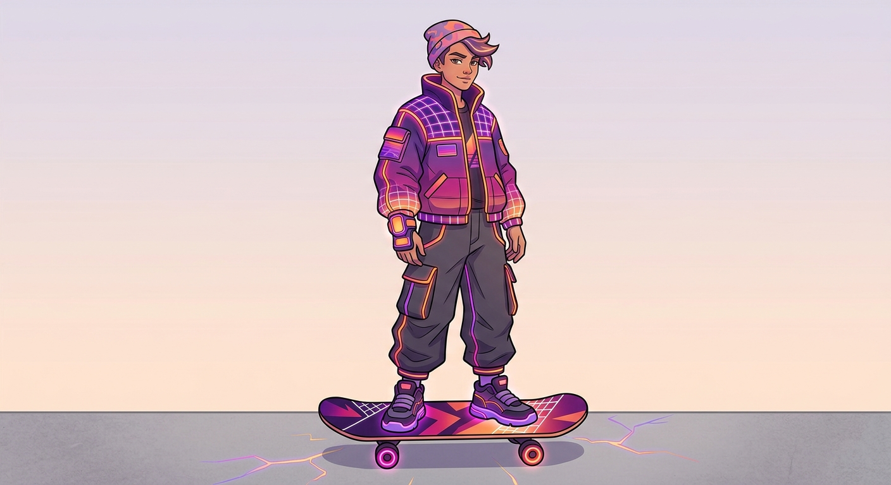
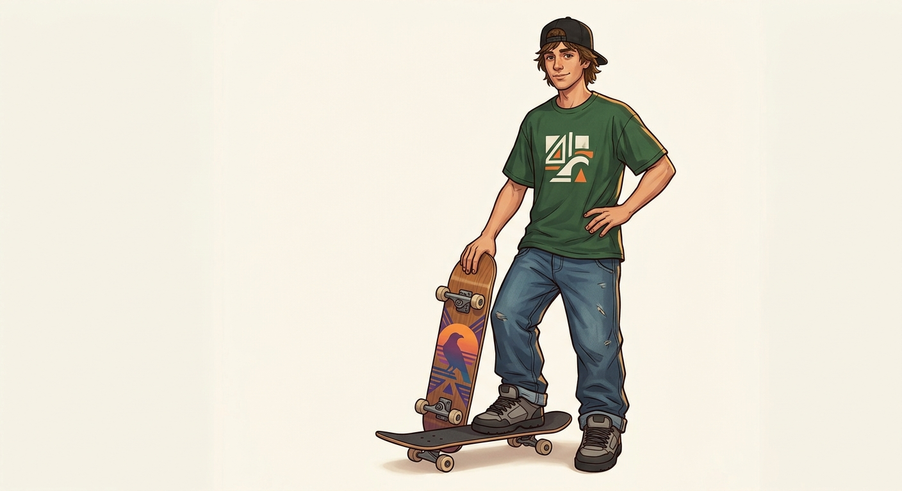
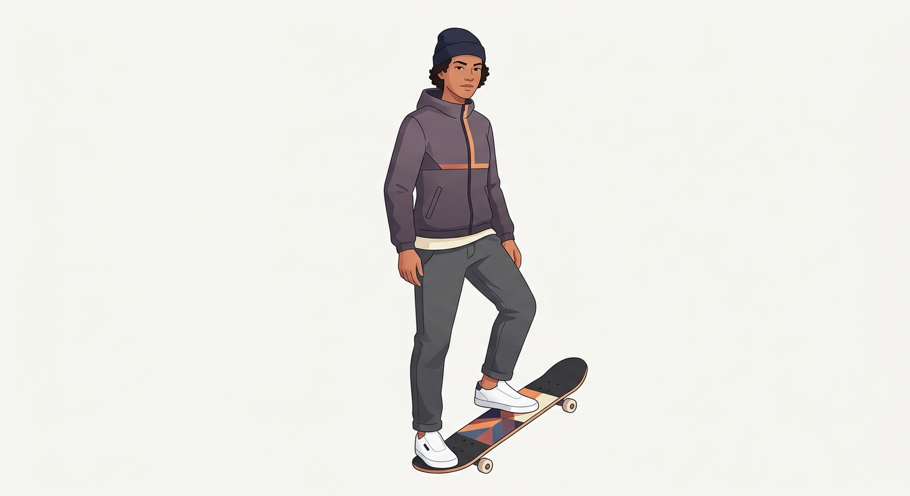
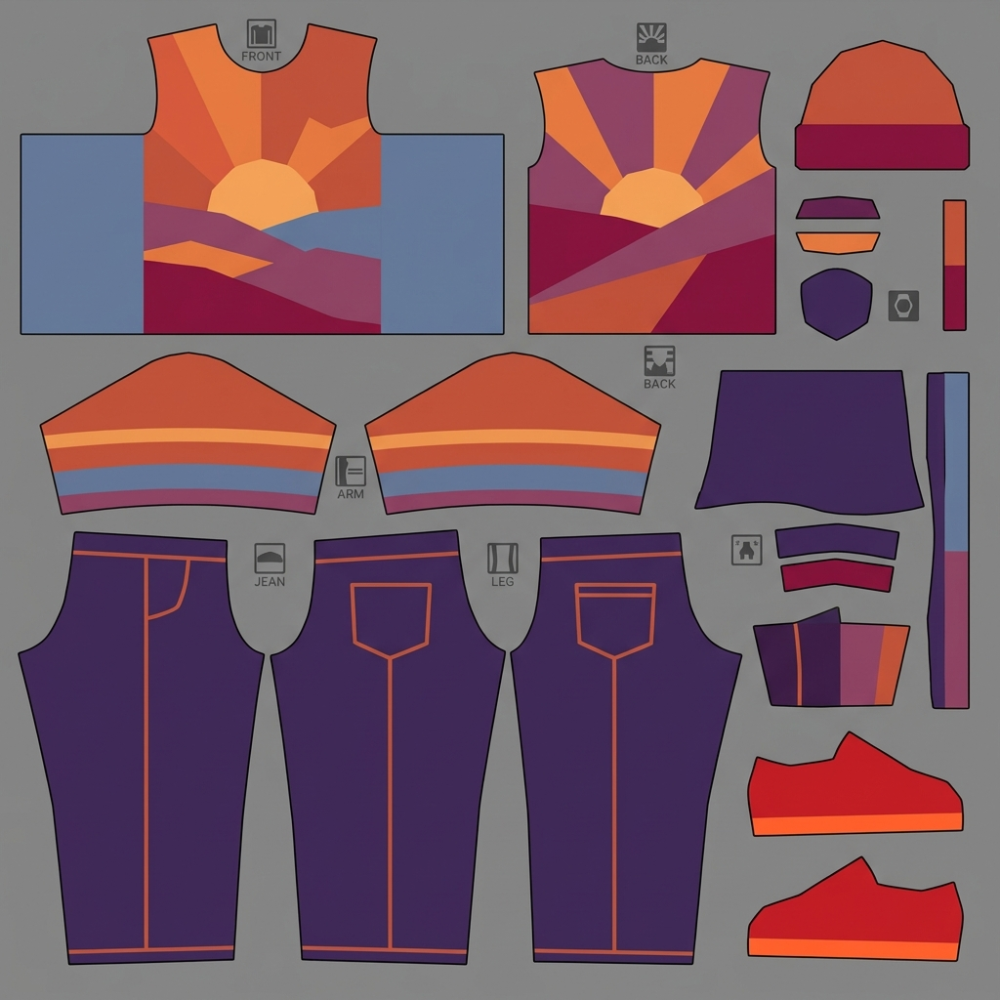

my pickLow-poly mascotChunky faceted style — closest to what's buildable in the game's 3D engine and on-palette.

SynthwaveNeon retrowave, matches the sunset palette exactly. More illustrated than low-poly.

90s streetGrounded skater — cap, tee, baggy jeans. Realistic proportions.

Modern minimalFlat-shaded, muted greys with one sunset-orange accent.
Texture / skin examples
live in-gameDeck graphicApplied to the board's underside in the game right now — see it during flips.

Outfit skin sheetUV-style clothing texture (tee, sleeves, jeans, beanie) to wrap on the character.
Tell me which character direction to build the 3D skater toward — I'll rebuild the model to match, wrap the outfit skin on it, and tackle solid collision next.